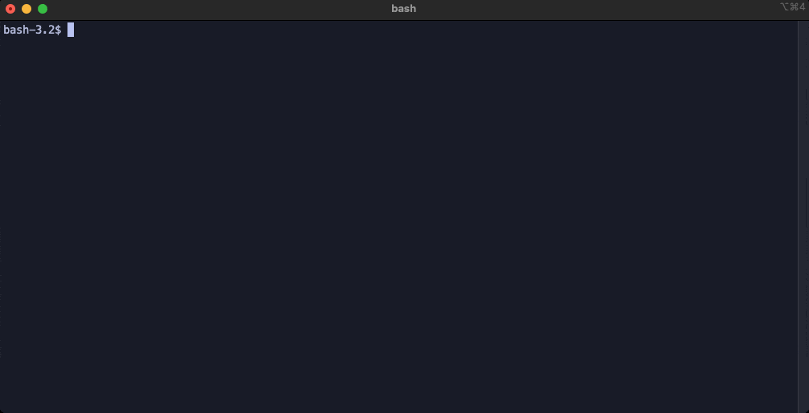
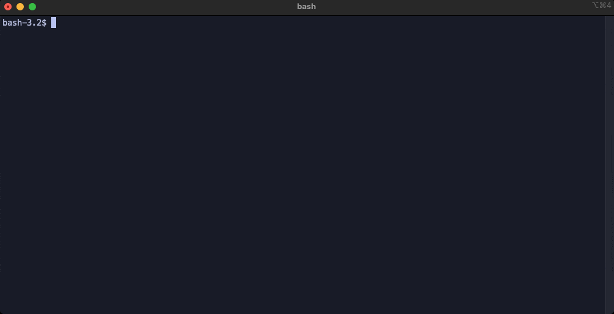
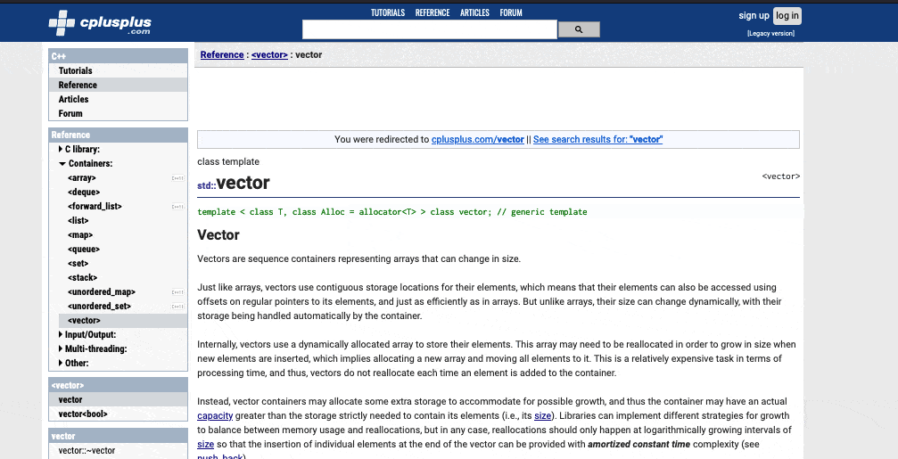
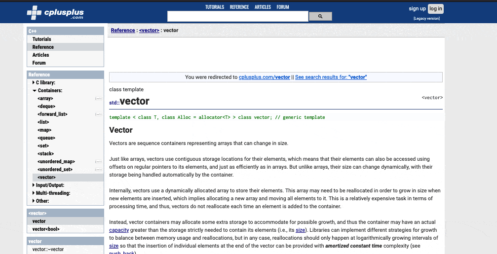
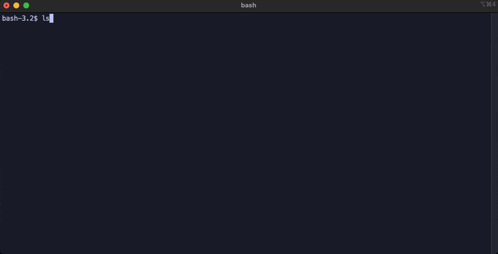
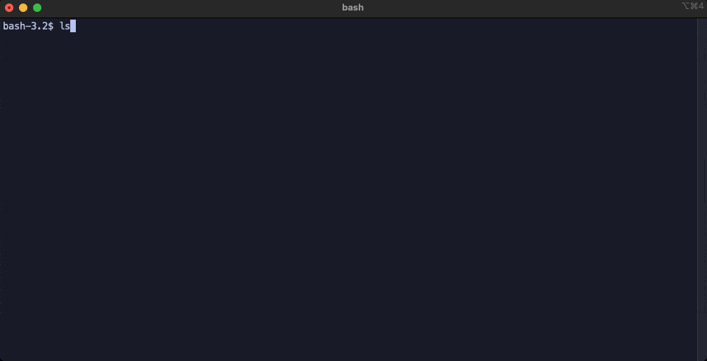

C pool
Summary
This was the admission process to my school, taking the form of a 4 week internship to realize and explain a succession of computer exercises in C language. Most of these exercices consisted into implementing buildin C functions and datastructures.
Insights
With almost no experience in programming, it has been a challenge but also a breakthrough to learn how to communicate fluently with a computer.
Time
4 weeks


 
 
 
